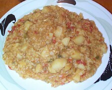
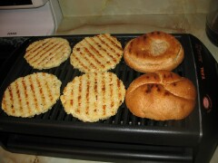
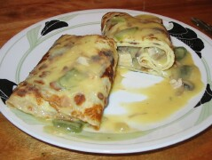
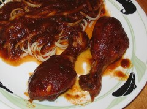
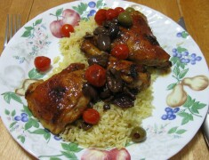
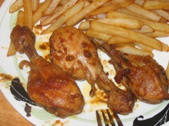
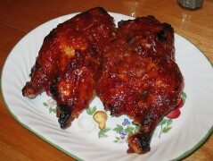
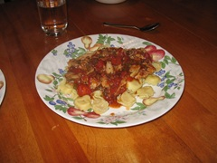

Poulet

Blancs de Poulet et Salsa
Prep :30min | Cuisson :60min | Portion :4
Bouillit de Poulet au Cari
Prep :15min | Cuisson :1.30min | Portion :4
Burgers de poulet, mayonnaise sauce Hoisin
Prep :10min | Cuisson :10min | Portion :4

Chop suey au poulet
Prep :10min | Cuisson :30min | Portion :4
Crêpes garnies au poulet
Prep :10min | Cuisson :20min | Portion :4
Cuisses de poulet à la mexicaine
Prep :10min | Cuisson :120min | Portion :4-6
Cuisses de poulet aux olives et aux tomates cerise
Prep :10min | Cuisson :70min | Portion :4
Cuisses de Poulet Épicées
Prep :15min | Cuisson :1.30min | Portion :4
Demi Poulet Barbecue
Prep :5min | Cuisson :45min | Portion :4

Escalope de poulet farcie à la saucisse Italienne
Prep :20min | Cuisson :30min | Portion :4
Filet de canard et poitrine de volaille
Prep :15min | Cuisson :25min | Portion :4
Gratin de chou fleur et brocoli au poulet
Prep :10min | Cuisson :20min | Portion :4
Lasagne au Poulet
Prep :60min | Cuisson :35min | Portion :6
Pâté au poulet
Prep :60min | Cuisson :30min | Portion :4
Pilons de Poulet Chinois
Prep :15min | Cuisson :20min | Portion :4
Pilons de Poulet Mexicain
Prep :5min | Cuisson :2.15min | Portion :2-3
Pilons de poulet et pommes de terre a l ail
Prep :20min | Cuisson :90min | Portion :4
Penne sauce tomate au poulet et fromage
Prep :10min | Cuisson :10min | Portion :4
Poitrines de Poulet BBQ Sucrées
Prep :20min | Cuisson :60min | Portion :4
Poitrine de Poulet Créole
Prep :25min | Cuisson :25min | Portion :4
Poitrines de poulet farcies
Prep :15min | Cuisson :45min | Portion :4
Poitrines de poulet sauce californienne
Prep :5min | Cuisson :75min | Portion :4
Poulet a griller au Four ou au BBQ
Prep :10min | Cuisson :50min | Portion :4-6
Potage au Poulet
Prep :20min | Cuisson :60min | Portion :4
Poulet aux champignons
Prep :25min | Cuisson :1.20min | Portion :4
Poulet aux légumes en sauce
Prep :30min | Cuisson :45min | Portion :4
Poulet BBQ en Casserole
Prep :15min | Cuisson :1.30min | Portion :4-6
Poulet Buffalo
Prep :15min | Cuisson :30min | Portion :4
Poulet crémeux à la dijonnaise
Prep :5min | Cuisson :30min | Portion :4
Poulet et Pâtes en Sauce Rouge
Prep :15min | Cuisson :30min | Portion :4
Poulet fermier rôti et légumes racines
Prep :30min | Cuisson :60-90min | Portion :6
Poulet Hawaïen
Prep :20min | Cuisson :120min | Portion :4
Poulet Kentucky 2
Prep :30min | Cuisson :90min | Portion :4-6
Poulet Mangue Feta et Curry
Prep :10min | Cuisson :20min | Portion :4
Poulet manuellement modifié
Prep :20min | Cuisson :80min | Portion :4-6
Poulet marmelade et canneberge
Prep :10min | Cuisson :60min | Portion :4-6
Poulet multiculturel
Prep :15min | Cuisson :60min | Portion :4
Poulet pané au fromage parmesan
Prep :5min | Cuisson :30min | Portion :4
Poulet rôti sur BBQ a saveur d'agrumes
Prep :10min | Cuisson :60min | Portion :4
Poulet Russe
Prep :10min | Cuisson :120min | Portion :4
Poulet sauce au Beurre d'arachide et ananas
Prep :30min | Cuisson :10min | Portion :4-5
Poulet Subito Presto
Prep :15min | Cuisson :20min | Portion :4
Riz Servit dans un Ananas
Prep :30min | Cuisson :30min | Portion :4
Rôti de dinde au four
Prep :20min | Cuisson :60-75min | Portion :4-8
Sauce aux tomates Italiennes au poulets
Prep :30min | Cuisson :60min | Portion :4
Sauté de poulet et tofu thaïlandais
Prep :10min | Cuisson :20min | Portion :4
Tortellini de poulet, tomates basilic et bacon
Prep :15min | Cuisson :30min | Portion :4